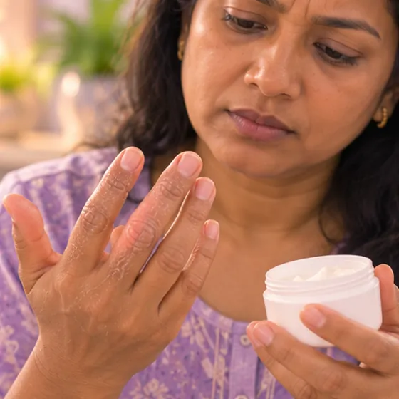

糜烂型足癣
趾缝间的真菌感染，皮肤发白湿软、疼痛、糜烂
这是什么
糜烂型足癣是一种真菌感染，通常从脚趾缝开始。皮肤发白、湿软、脱落，可能留下发红、疼痛的糜烂面。
- 脚趾缝
- 闷热、多汗、潮湿的脚
- 发痒、湿软、疼痛的皮肤
- 就诊科室
- 家庭医生；皮肤科医生；也可向药剂师咨询
- 多发人群
- 成年人；脚爱出汗、穿紧鞋、用公共淋浴间或有糖尿病的人
- 传染性
- 会，可通过接触、潮湿的地面、共用毛巾或鞋子传播
- 病程
- 通常需要医生或药剂师给药；如果脚一直潮湿，可能再次出现
常见表现

皮肤瘙痒瘙痒 
皮肤脱皮脱屑
其他症状
- 脚趾缝间有疼痛的裂口
- 脚有难闻的气味
- 发红或脱皮可蔓延到脚底或脚侧
为什么会这样

密切接触或共用物品接触传播
其他原因
- 真菌喜欢在温暖潮湿的皮肤上生长，尤其是脚趾缝
- 脚爱出汗、鞋子太紧，或袜子一直潮湿
- 赤脚走在公共淋浴间、更衣室和泳池
- 糖尿病或免疫力低下会使它更容易出现
出现这些情况请先看医生
- 脚或腿红、热、肿，并有流脓、腿上出现红色条纹或发烧：立即去医院
- 如果有糖尿病或脚部感觉减退，脚上出现任何溃疡、裂口或感染：请尽快看医生
- 裂口非常疼痛、渗液、有黄色结痂或气味很重，可能同时有细菌感染
- 皮疹蔓延到指甲、腹股沟、手或身体其他部位
- 免疫力低下（例如因其他疾病或药物）：请及早看医生
- 按医嘱用药后仍不见好转，或反复出现
如果有以上情况，请先看医生，再来做调理。
本页只是一般性的健康资讯。请继续按时服用平常的药物，并继续看医生。
请继续日常治疗
请继续按医嘱服药，并按时复诊。我们的调理是温和的辅助，不能代替医疗。
日常护理

咨询药剂师药剂师建议 
不共用毛巾、剃刀或杯子个人用品分开
更多自我照顾的方法
- 每天洗脚，仔细擦干脚趾缝，然后让脚透透气
- 穿干净的棉袜，袜子潮湿时要更换，选择透气的鞋子或凉鞋
- 不要抓挠皮肤；未经医生或药剂师同意，不要使用以前剩下的强效药膏
告诉理疗师
- 糖尿病或皮肤感觉减退
- 皮肤破损、发红或疼痛
- 发烧或正在感染
- 腿或脚发麻刺痛
调理师会在开始前和你确认这一项。
常见问题
糜烂型足癣是什么？
趾缝间的真菌感染，皮肤发白湿软、疼痛、糜烂。糜烂型足癣是一种真菌感染，通常从脚趾缝开始。皮肤发白、湿软、脱落，可能留下发红、疼痛的糜烂面。
糜烂型足癣有哪些常见表现？
皮肤瘙痒；皮肤脱皮
为什么会有糜烂型足癣？
密切接触或共用物品
有糜烂型足癣要怎么照顾自己？
咨询药剂师；不共用毛巾、剃刀或杯子
AI Body Master 的调理对糜烂型足癣有帮助吗？
调理是温和的无针经络养生辅助，不能治疗或治愈糜烂型足癣，也不能代替药物或医生。开始前请告诉理疗师。
相关疾病
参考资料: General information based on public health sources such as Mayo Clinic, NHS, Cleveland Clinic and NCBI StatPearls.
页面更新: 2026-11-01